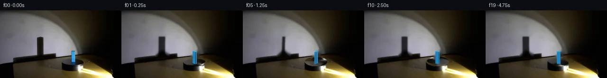

![首帧]()

Round 00
2026-11-05T00:15:08.821161+00:00像素候选变化代码 +291/−0inspection 更新
pixels 939ed4e1700a9a07 · code 364cbd4ddbfafc9d
查看本轮 generate.py 真实 diff
--- previous/generate.py
+++ current/generate.py
@@ -0,0 +1,291 @@
+#!/usr/bin/env python3
+"""Generate a 20-frame, source-preserving turntable demonstration.
+
+All later frames are built locally from first_frame.png using inpainting,
+analytic projection, pixel remapping, and alpha/multiply compositing.
+"""
+
+from pathlib import Path
+import math
+
+import cv2
+import numpy as np
+from PIL import Image, ImageDraw, ImageFilter
+
+from artifact_io import save
+
+
+ROOT = Path(__file__).resolve().parent
+W, H = 256, 144
+SCALE = 4
+
+
+def ellipse_mask(cx, cy, rx, ry, feather=1.0):
+ yy, xx = np.mgrid[0:H, 0:W]
+ q = np.sqrt(((xx - cx) / rx) ** 2 + ((yy - cy) / ry) ** 2)
+ return np.clip((1.0 + feather / max(rx, ry) - q) * max(rx, ry) / feather, 0, 1)
+
+
+def inpaint_clean_plate(src):
+ """Remove only the moving upright block and its upright wall shadow."""
+ bgr = cv2.cvtColor(src, cv2.COLOR_RGB2BGR)
+
+ shadow_mask = np.zeros((H, W), np.uint8)
+ # The mask stops at y=95 so the fixed horizontal platform shadow remains.
+ cv2.rectangle(shadow_mask, (73, 51), (99, 95), 255, -1)
+ shadow_mask = cv2.dilate(shadow_mask, np.ones((5, 5), np.uint8), iterations=1)
+ wall_clean = cv2.inpaint(bgr, shadow_mask, 8, cv2.INPAINT_TELEA)
+
+ object_mask = np.zeros((H, W), np.uint8)
+ cv2.rectangle(object_mask, (147, 83), (163, 117), 255, -1)
+ object_mask = cv2.dilate(object_mask, np.ones((3, 3), np.uint8), iterations=1)
+ all_clean = cv2.inpaint(wall_clean, object_mask, 5, cv2.INPAINT_TELEA)
+ return cv2.cvtColor(all_clean, cv2.COLOR_BGR2RGB)
+
+
+def rotate_turntable_top(frame, clean, angle):
+ """Rotate source texture inside the projected elliptical top surface."""
+ cx, cy, rx, ry = 154.0, 108.6, 24.0, 10.6
+ yy, xx = np.mgrid[0:H, 0:W].astype(np.float32)
+ u = (xx - cx) / rx
+ v = (yy - cy) / ry
+ ca, sa = math.cos(angle), math.sin(angle)
+ # Clockwise visible motion: inverse-map the destination by +angle in a
+ # normalized circle. OpenCV samples the source at these coordinates.
+ su = ca * u - sa * v
+ sv = sa * u + ca * v
+ mapx = (cx + rx * su).astype(np.float32)
+ mapy = (cy + ry * sv).astype(np.float32)
+ warped = cv2.remap(clean, mapx, mapy, cv2.INTER_LINEAR,
+ borderMode=cv2.BORDER_REFLECT_101)
+ alpha = ellipse_mask(cx, cy, rx - 0.7, ry - 0.6, 0.9)[..., None]
+ # Keep the rim and fixed outline; only the upper disk pixels rotate.
+ mixed = frame.astype(np.float32) * (1 - alpha) + warped.astype(np.float32) * alpha
+ return np.clip(mixed, 0, 255).astype(np.uint8)
+
+
+def projected_footprint(angle):
+ """Project a 7.4 x 3.3 unit rectangle onto the tabletop."""
+ a, b = 3.7, 1.65
+ world = np.array([[-a, -b], [a, -b], [a, b], [-a, b]], np.float32)
+ ca, sa = math.cos(angle), math.sin(angle)
+ # Positive angle is clockwise in image coordinates.
+ rot = np.array([[ca, -sa], [sa, ca]], np.float32)
+ p = world @ rot.T
+ # Perspective basis for the tabletop: away/right axes are compressed.
+ x = 154.5 + p[:, 0] - 0.48 * p[:, 1]
+ y = 113.0 + 0.20 * p[:, 0] + 0.40 * p[:, 1]
+ return np.c_[x, y]
+
+
+def polygon_layer(size=(W * SCALE, H * SCALE)):
+ return Image.new("RGBA", size, (0, 0, 0, 0))
+
+
+def spoints(points):
+ return [(int(round(x * SCALE)), int(round(y * SCALE))) for x, y in points]
+
… diff truncated; 204 more lines …